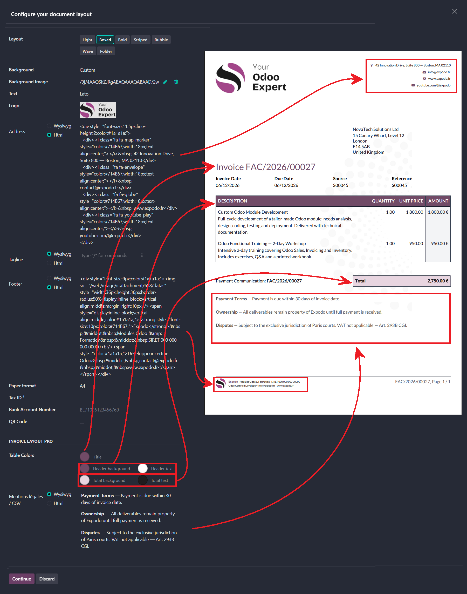

HTML address block, Legal Notices field and table color pickers added directly to Odoo's document layout dialog.
You don't need to write code by hand. Use a free online visual editor: build your block visually, then copy-paste the generated HTML into the Odoo field. A few reliable free options:
Tip: most fields also work perfectly in WYSIWYG mode. HTML is only needed for advanced layouts (icons, two-column headers, custom fonts, etc.).
This is intentional. Odoo's built-in color field applies a single tint across multiple document zones and conflicts with our four-color customization system. It is hidden as long as Invoice Layout Pro is installed.
If a residual color from your previous configuration is still showing: uninstall the module. The native color field will reappear and you can clear or change it normally.
Yes. If you need per-customer templates, a fully custom QWeb report, or a PDF that matches your complete brand identity, reach out at info@expodo.fr. We offer tailored development services on a quote basis.